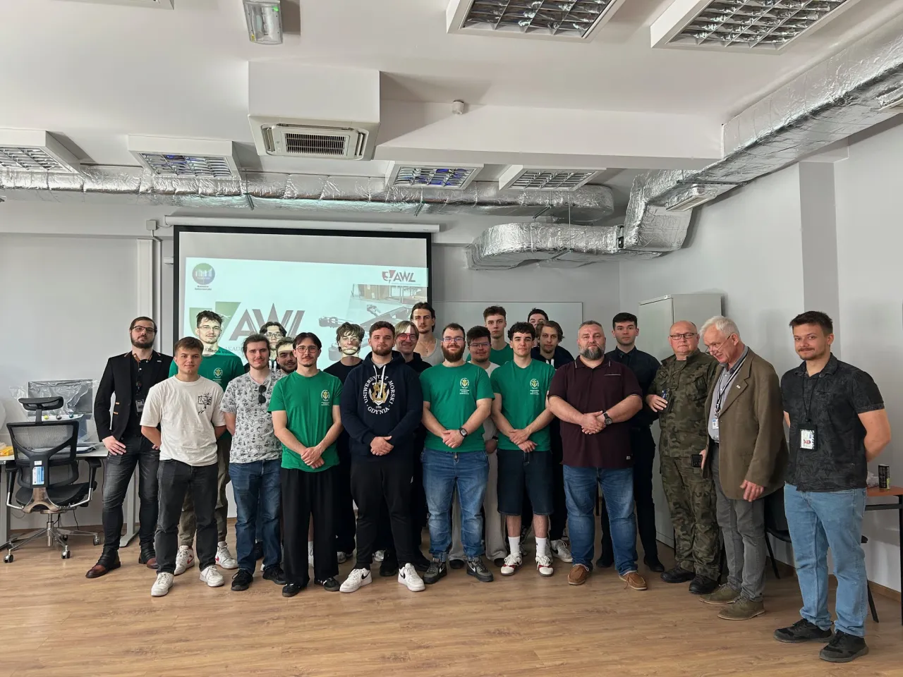
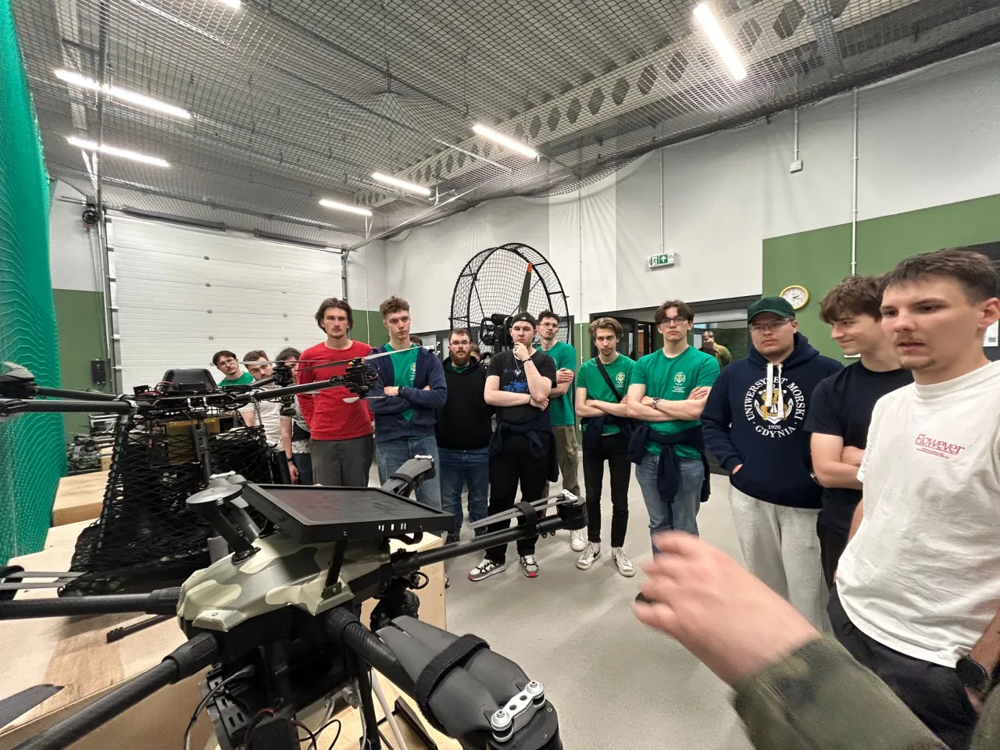
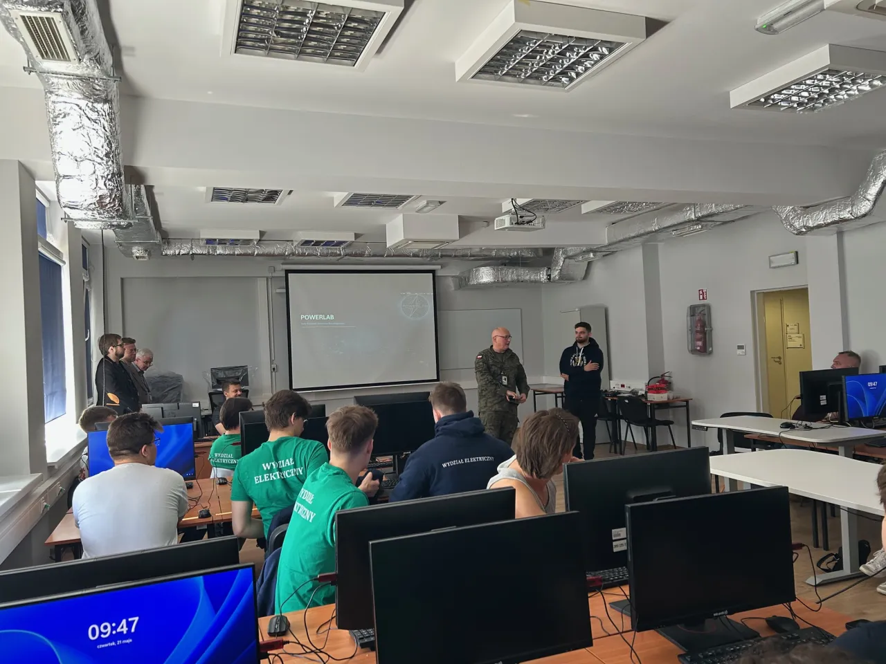
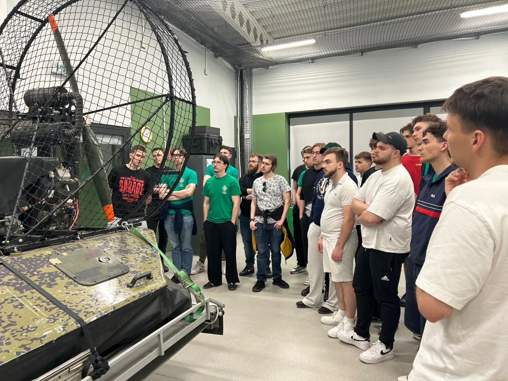

Relacja z wyjazdu · 5 zdjęć
Technologia z bliska
Odwiedziliśmy AWL i poznaliśmy działalność koła dronowego, aby zobaczyć, jak w praktyce wygląda budowa i obsługa dronów. Przyglądaliśmy się wykorzystywanym technologiom, poznawaliśmy zasady działania bezzałogowych statków powietrznych i rozmawialiśmy o ich zastosowaniu. Wróciliśmy z głowami pełnymi inspiracji i pomysłów na kolejne projekty!